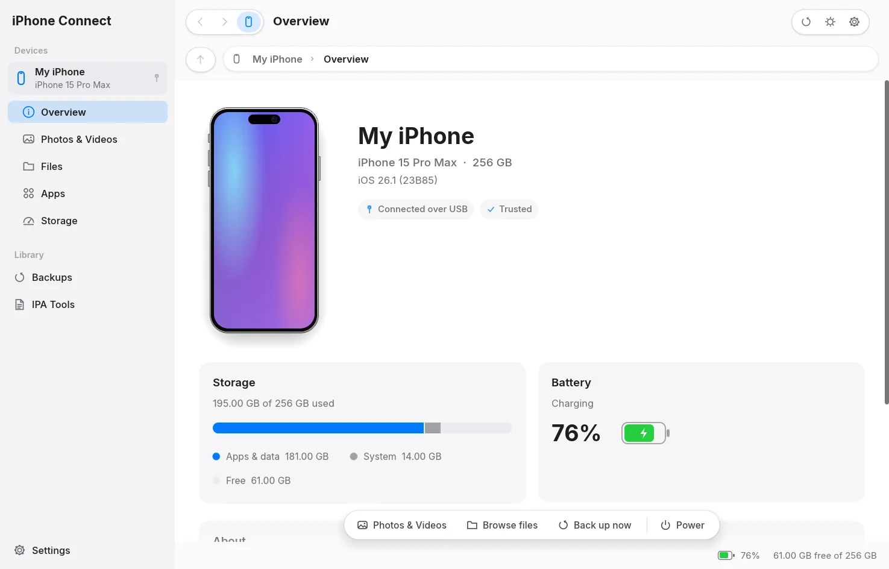
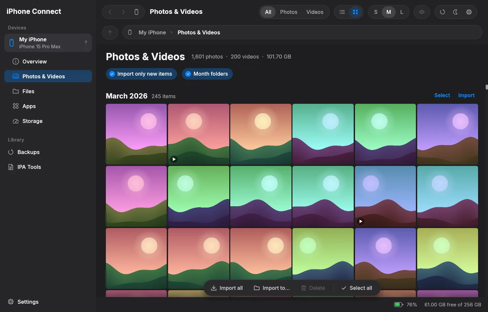
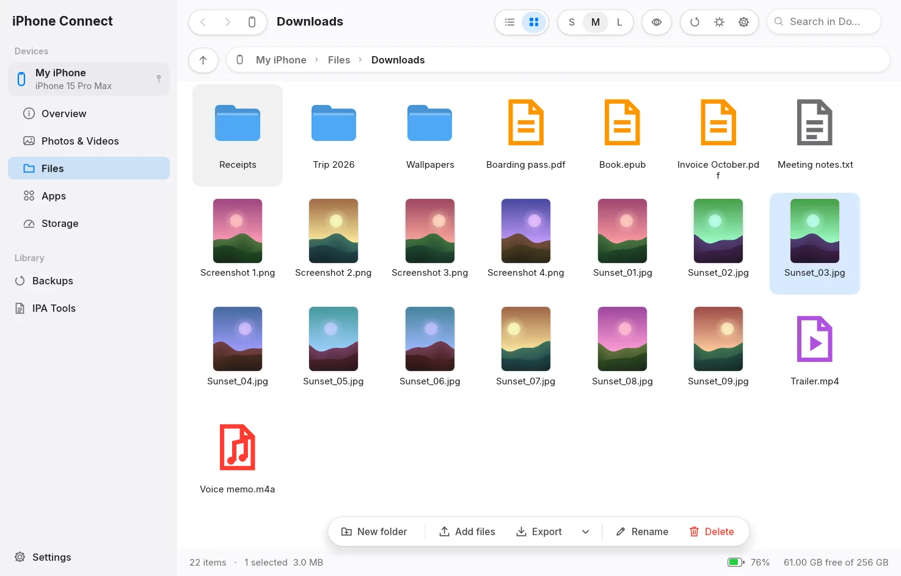
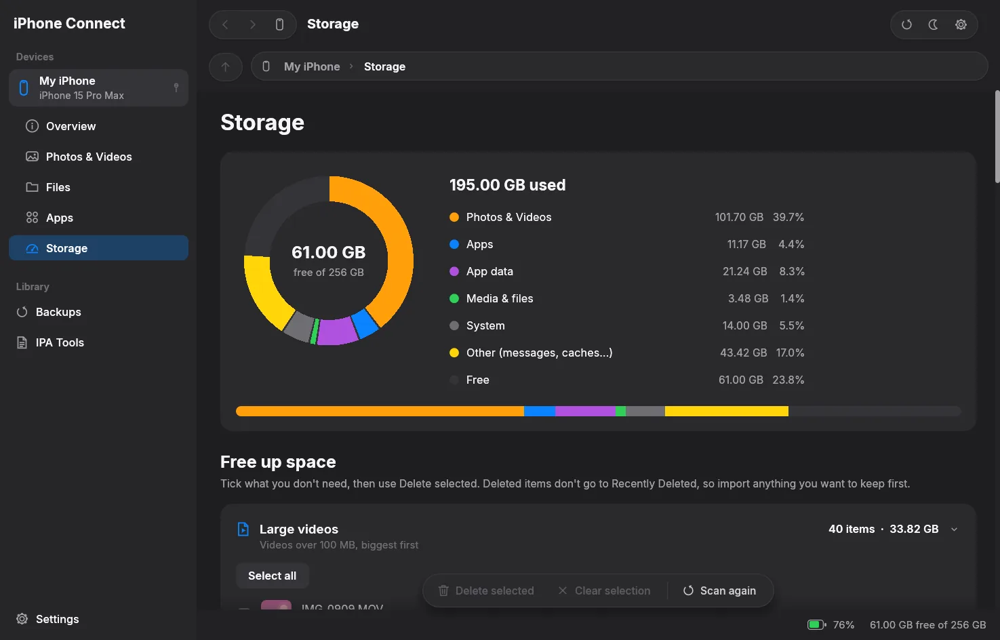
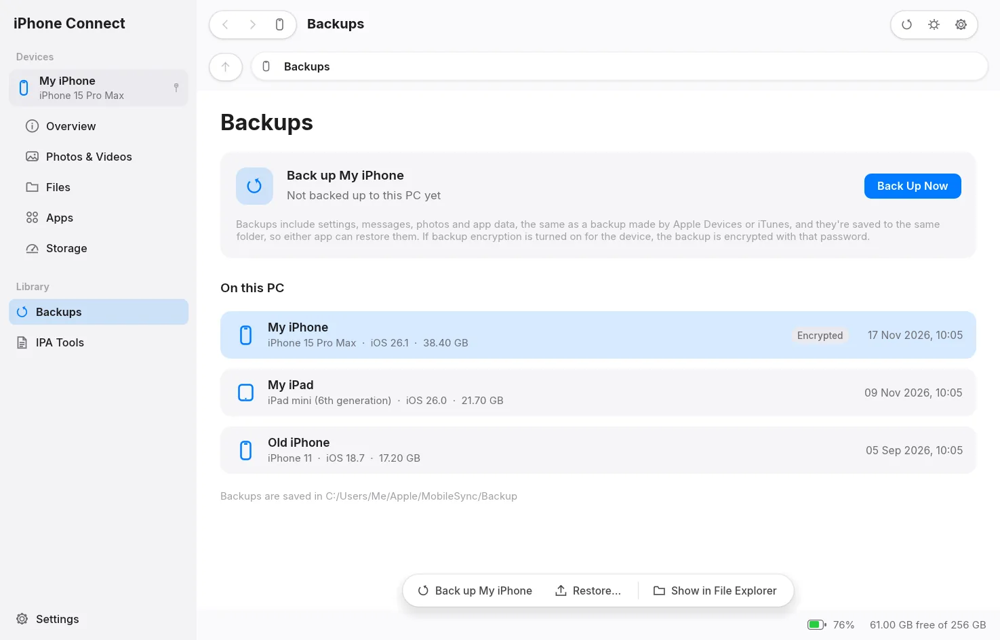
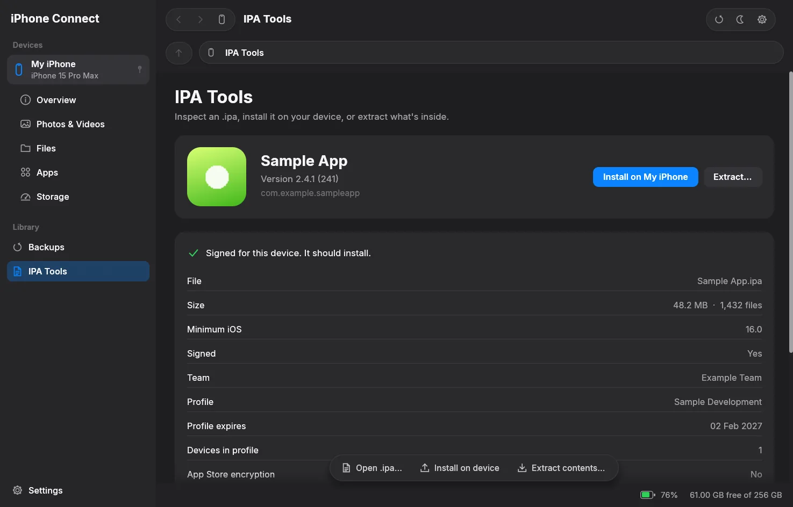

Free. No account.
iPhone ConnectiPhone and iPad companion
- Price
- Free
- Version
- 1.0.0
- Runs on
- Windows 10 and 11
- Admin rights
- Not needed
Free
Download, install and you are done.
Browse your device like a folder, import photos and videos with previews, back up and restore, sideload an .ipa and free up storage. It idles at about 5 MB and keeps everything on your PC.
Windows 10 and 11, 64-bit · Installs for your user, no admin rights

Your device at a glance: model, battery, storage and details. Click a row to copy it.

Your camera roll by month, with real thumbnails. Import everything, one month or just what you pick.

Browse the device like a folder. Export any file type, or drag files in from File Explorer.

See what is using space. Delete large videos, screenshots and leftovers in one go.

Back up and restore your device. Uses the same folder as Apple Devices.

Open an .ipa and see if it will install. Sideload one signed for your device.
A companion for your iPhone or iPad on Windows.
Thumbnails from the device.
Counts and sizes your whole camera roll by month, with thumbnails taken from the previews the iPhone already keeps.
Details or icon view.
Sort by name, date, kind or size, search, and use breadcrumbs. Press Space for Quick Look on any item.
Donut chart and a cleaner.
A chart of photos and videos, apps, app data, media and system, plus tick-boxes for what you can clear.
Same folder as Apple Devices.
Back up the whole device to the folder Apple Devices uses, and restore from any backup found on the PC.
Sideload or extract.
Open an .ipa to see its name, version, bundle ID, signing team and expiry, and whether it will install on the connected device.
Small, quiet and local.
Match Windows, or choose your own.
Download, install and you are done.
iPhone-Connect-Setup-1.0.0.exe and double-click it. It installs for your account only.Release notes for iPhone Connect.
Windows 10 or 11, plus Apple Devices (free from the Microsoft Store) or iTunes, which install Apple Mobile Device Service. The first-run guide checks this and links to the official downloads.
No. Apple removed that ability years ago. IPA Tools works on .ipa files you already have. To keep app data, back up the device or back up the app documents.
No. There is no account, no cloud and no telemetry.
The installer is not code-signed yet. Click More info, then Run anyway.
Device detection, browsing, photos, the app list and the storage scan were checked on a real iPhone. Backup, restore, import, delete, sideloading and cache clearing have had less testing on hardware, so keep a backup before deleting or restoring.